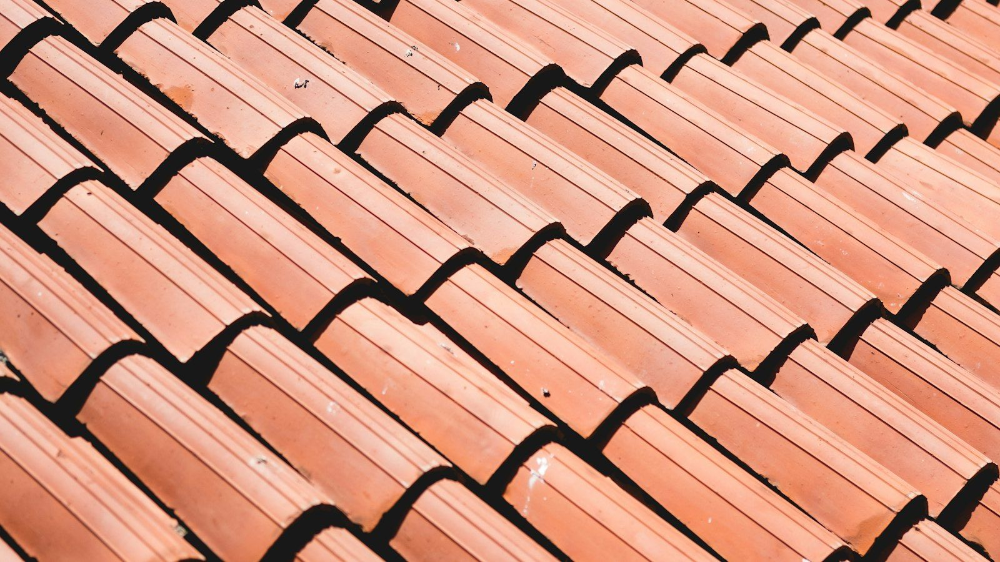
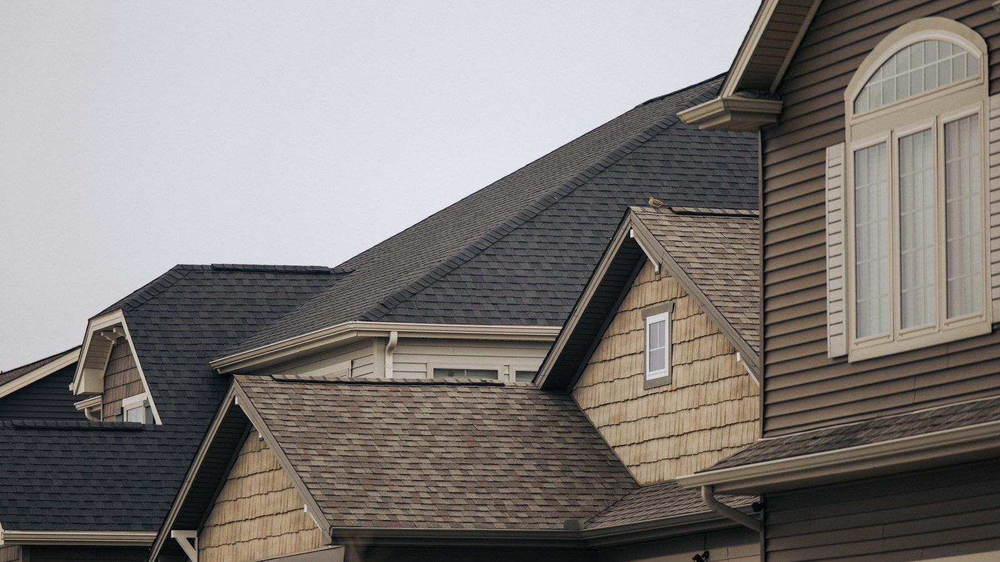
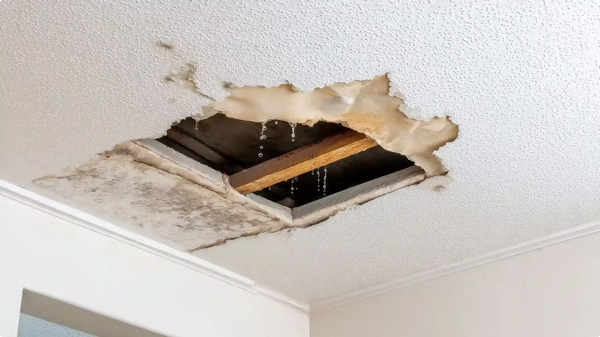
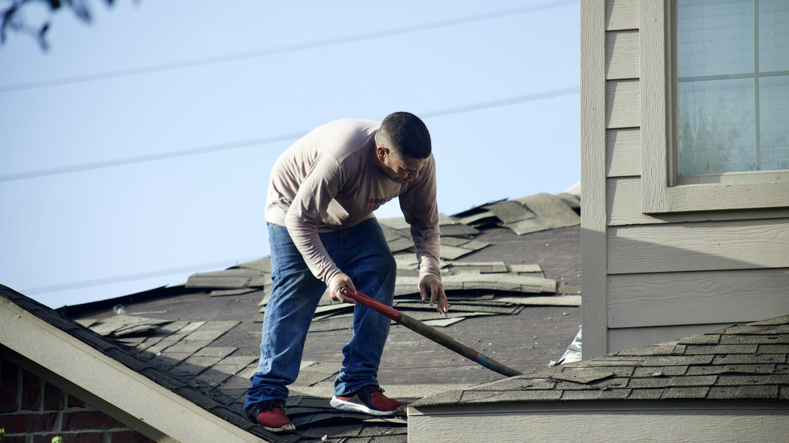

From the roof: news, advice & recent projects.
Straight talk from a family that's been on Tampa Bay roofs since 1989 — storm prep, what we find under old shingles, and the projects we're working on right now.

Weeks of Rain and Your Roof: How a Wet El Niño Winter Finds Every Weak Spot
A summer thunderstorm is loud, but it's over in an hour and the roof dries out. Days of steady El Niño rain are a different story. Here's where water finds its way in, and how to catch a leak early.
Read the post →Hurricane Season and Your Roof: What to Do Before the Storm, and What to Do After
After Helene and Milton, our phones didn't stop ringing for months. Here's what we learned about the roofs that came through fine, and a calm, step-by-step plan for before and after the next one.
Read the post →
Clay Tile vs. Concrete Tile: What Florida Homeowners Should Know Before Choosing
From the street they look almost the same. Up close they're two very different materials. Here's the honest comparison we give homeowners, plus the one thing most people don't know about tile roofs in Florida.
Read the post →
Those Black Streaks on Your Roof Aren’t Dirt: Why We Install Atlas Shingles With Scotchgard Protector
Drive down almost any street in St. Pete and you'll see them. Here's what those dark streaks really are, why we tell people to put the pressure washer down, and the shingle we install to keep them from coming back.
Read the post →
Why Regular Roof Maintenance Can Save Florida Homeowners Thousands of Dollars
Most homeowners don't think about their roof until there's a leak — and by then, a minor repair may have become a major expense. Here's how routine maintenance protects your biggest investment.
Read the post →
Hurricane Clips: The Small Metal Connector That Can Save Your Home During a Storm
Most homeowners have never seen one — but this hidden connector helps keep your roof attached in hurricane-force winds, and can lower your insurance bill.
Read the post →
Is Your Roof Ready for a Strong El Niño? A Storm-Prep Checklist for Florida Homeowners
Heavy rain doesn't create roofing problems — it exposes the ones that already exist. Seven steps to take before the wet season arrives.
Read the post →
New Flat Roof Lift & Replacement Underway on Treasure Island
A full flat roof lift kit and all-new plywood decking on a waterfront apartment building — done the right way from the start.
Read the post →
New Roof Installation in St. Petersburg: Why Replacing Rotten Roof Decking Matters
The shingles looked fine — but the wood underneath told a different story. What we found on a recent St. Pete re-roof, and why it matters.
Read the post →Have a question about your roof?
Call the family that's been answering Tampa Bay's roofing questions since 1989 — honest advice, no pressure.